DeepSinger: Singing Voice Synthesis with Data Mined From the Web
Authors
- Yi Ren* (Zhejiang University) rayeren@zju.edu.cn
- Xu Tan* (Microsoft Research Asia) xuta@microsoft.com
- Tao Qin (Microsoft Research Asia) taoqin@microsoft.com
- Jian Luan (Microsoft STCA) jianluan@microsoft.com
- Zhou Zhao (Zhejiang University) zhaozhou@zju.edu.cn
- Tie-Yan Liu (Microsoft Research Asia) tyliu@microsoft.com
* Equal contribution.
Chinese
| / | Sample 1 | Sample 2 | Sample 3 |
|---|---|---|---|
| Data crawling | Lyrics: 爱从不容许人三心两意 Phonemes: PAD ai c ong b u r ong x v r en s an x in l iang PAD i |
Lyrics: 遮住你的眼睛 Phonemes: zh e zh u n i d e PAD ian j ing |
Lyrics: 好久好久 Phonemes: h ao j iou h ao j iou |
| Singing and accompaniment separation | |||
| Lyrics-to-singing alignment | Attention map 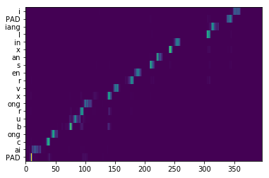 Lyrics-to-singing alignment 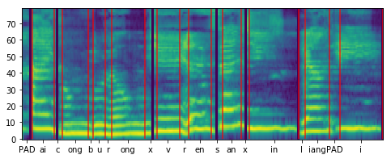 |
Attention map 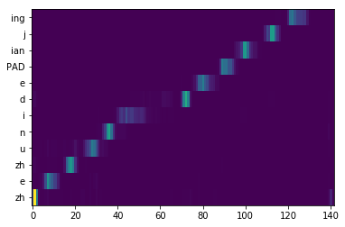 Lyrics-to-singing alignment 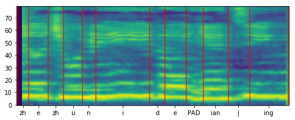 |
Attention map 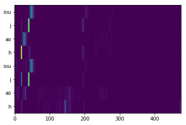 |
| Data filtration | Keep (Splitting Reward: $\mathcal{O} = 0.8244 $) | Keep (Splitting Reward: $\mathcal{O} = 0.8359 $) | Discard (Splitting Reward: $\mathcal{O} = 0.3764 $) |
| Singing modeling |
$\textit{GT (Linear+GL)}$ $\textit{DeepSinger}$ Pitch Plot 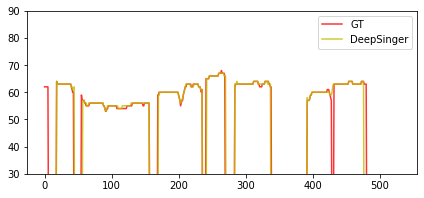 |
$\textit{GT (Linear+GL)}$ $\textit{DeepSinger}$ Pitch Plot 
|
/ |
P.S. 1) $\textit{GT}$, the ground-truth audio; 2) $\textit{GT (Linear+GL)}$, where we synthesize voices based on the ground-truth linear-spectrograms using Griffin-Lim; 3) $\textit{DeepSinger}$, where the audio is generated by DeepSinger.
Cantonese
| / | Sample 1 | Sample 2 | Sample 3 |
|---|---|---|---|
| Data crawling | Lyrics: 我已经不懂心痛 Phonemes: ŋ o5 j i5 ɡ inɡ1 b a1 t d unɡ2 s a1 m t unɡɜ |
Lyrics: 或你会了解在孤单中的心痛 Phonemes: w aa6 k n ei5 w ui6 l iu5 ɡ aai2 z oi6 ɡ u1 d aa1 n z unɡ1 d i1 k s a1 m t unɡɜ |
Lyrics: 唔知点解 我成日都好担心 Phonemes: nɡ4 z i1 d i2 m ɡ aai2 ŋ o5 s inɡ4 j a6 t d ou1 h ou2 d aa1 m s a1 m |
| Singing and accompaniment separation | |||
| Lyrics-to-singing alignment | Attention map 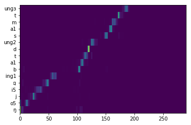 Lyrics-to-singing alignment 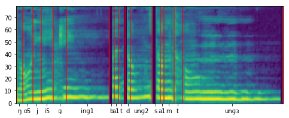 |
Attention map 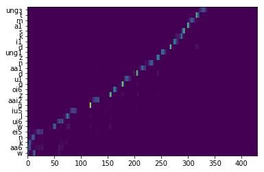 Lyrics-to-singing alignment  |
Attention map 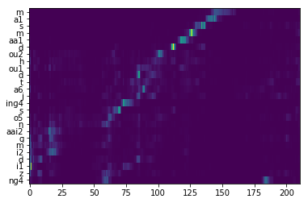 |
| Data filtration | Keep (Splitting Reward: $\mathcal{O} = 0.8105 $) | Keep (Splitting Reward: $\mathcal{O} = 0.7372 $) | Discard (Splitting Reward: $\mathcal{O} = 0.3601 $) |
| Singing modeling |
$\textit{GT (Linear+GL)}$ $\textit{DeepSinger}$ Pitch Plot 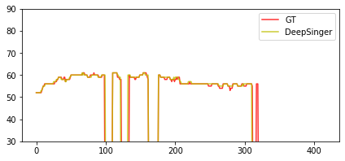 |
$\textit{GT (Linear+GL)}$ $\textit{DeepSinger}$ Pitch Plot 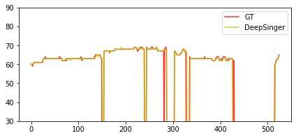 |
/ |
Our Related Works
Almost Unsupervised Text to Speech and Automatic Speech Recognition
FastSpeech: Fast, Robust and Controllable Text to Speech
MultiSpeech: Multi-Speaker Text to Speech with Transformer
Semi-Supervised Neural Architecture Search
LRSpeech: Extremely Low-Resource Speech Synthesis and Recognition
FastSpeech 2: Fast and High-Quality End-to-End Text-to-Speech
UWSpeech: Speech to Speech Translation for Unwritten Languages
Denoising Text to Speech with Frame-Level Noise Modeling